În lecția anterioară, ați învățat cum să creați o interogare simplă cu un singur tabel. Cele mai multe interogări pe care le proiectați în Access vor folosi probabil mai multe tabele, permițându-vă să răspundeți la întrebări mai complexe. În această lecție, veți învăța cum să proiectați și să creați o interogare cu mai multe tabele.
Proiectarea unei interogări cu mai multe tabeleInterogările pot fi dificil de înțeles și de construit dacă nu aveți o idee bună despre ceea ce încercați să găsiți și cum să le găsiți. O interogare dintr-un singur tabel poate fi suficient de simplă pentru a fi remediată pe măsură ce mergeți, dar pentru a crea ceva mai puternic, va trebui să planificați interogarea în avans.
Planificarea unei interogăriCând planificați o interogare care utilizează mai mult de un tabel, urmați acești patru pași:
Acest proces poate părea abstract la început, dar pe măsură ce trecem prin procesul de planificare a propriei interogări cu mai multe tabele, ar trebui să începeți să înțelegeți cum planificarea interogărilor vă poate face mult mai ușoară construirea acestora.
Planificarea interogării noastreSă trecem prin acest proces de planificare cu o interogare pe care o vom rula în baza noastră de date de panificație. Pe măsură ce citiți procesul de planificare pas cu pas, gândiți-vă la modul în care fiecare parte a procesului de planificare s-ar putea aplica altor interogări pe care le-ați putea executa.
Pasul 1: identificați întrebarea pe care vrem să o punemBaza noastră de date de panificație conține mulți clienți, dintre care unii nu au plasat niciodată o comandă, dar care se află în baza noastră de date deoarece s-au înscris pe lista noastră de corespondență. Cei mai mulți dintre ei locuiesc în limitele orașului, dar alții locuiesc în afara orașului sau chiar în afara statului. Dorim să îi convingem pe clienții noștri din afara orașului care au plasat comenzi în trecut să revină și să ne mai încerce, așa că le vom trimite prin poștă niște cupoane. De fapt, nu dorim ca lista noastră să includă clienți care locuiesc prea departe; trimiterea unui cupon unei persoane care nu locuiește în zona noastră, probabil, nu va face acea persoană să vină. Așa că vrem doar să găsim oameni care nu locuiesc în orașul nostru, dar care încă locuiesc în zona noastră.
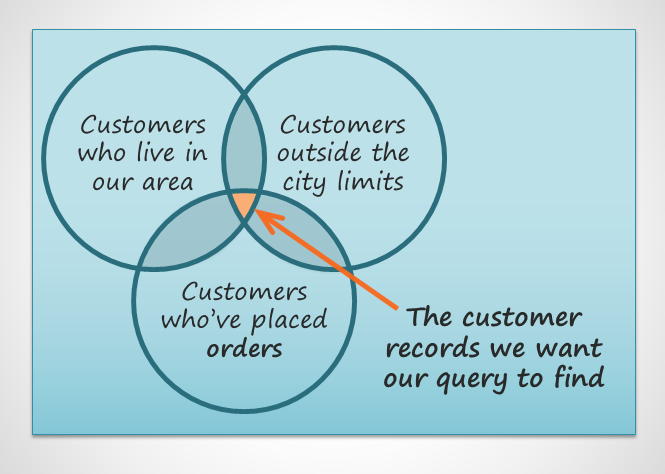
Pe scurt, întrebarea la care dorim să răspundă la întrebarea noastră este următoarea: Ce clienți locuiesc în zona noastră, se află în afara limitelor orașului și au plasat o comandă la brutăria noastră?
Pasul 2: Identificarea informațiilor de care avem nevoieCe informații am dori să vedem într-o listă despre acești clienți? Evident, vom avea nevoie de numele clienților și informațiile de contact ale acestora: adresele lor, numerele de telefon și adresele de e-mail. Dar cum vom ști dacă au plasat comenzi? Fiecare înregistrare a unei comenzi identifică clientul care a plasat comanda respectivă. Dacă includem numerele de identificare a comenzii, ar trebui să ne putem restrânge lista doar la clienții care au plasat anterior comenzi.
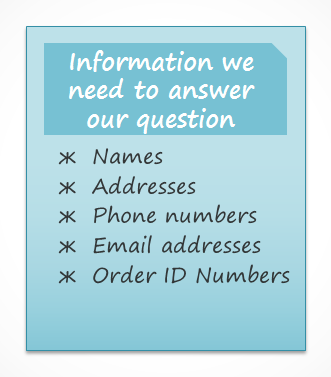
Pasul 3: Localizarea tabelelor care conțin informațiile de care avem nevoiePentru a scrie o interogare, trebuie să fii familiarizat cu diferitele tabele din baza de date. Din munca extensivă cu propria noastră bază de date, știm că informațiile despre clienți de care avem nevoie se află în câmpurile din tabelul Clienți. Numerele noastre de identificare a comenzii sunt într-un câmp din tabelul Comenzi. Trebuie doar să includem aceste două tabele pentru a găsi toate informațiile de care avem nevoie.
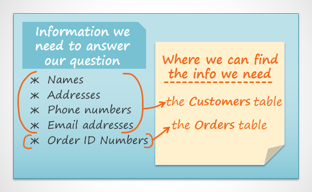
Pasul 4: Determinarea criteriilor pe care ar trebui să le caute interogarea noastrăCând setați criterii pentru un câmp dintr-o interogare, practic îi aplicați un filtru care îi spune interogării să obțină numai informații care corespund criteriilor dvs. Consultați lista câmpurilor pe care le includem în această interogare. Cum și unde putem stabili criteriile care ne vor ajuta cel mai bine să răspundem la întrebarea noastră?
Nu vrem clienți care locuiesc în orașul nostru, Raleigh, așa că ne dorim un criteriu care să returneze toate înregistrările, cu excepția celor cu Raleigh în domeniul orașului. Nu vrem nici clienți care locuiesc prea departe. Toate numerele de telefon din zonă încep cu prefixul 919, așa că vom include, de asemenea, un criteriu care va returna numai înregistrări ale căror intrări din câmpul numărului de telefon încep cu 919. Acest lucru ar trebui să garanteze că vom trimite cupoane numai către clienți care locuiesc suficient de aproape pentru a se întoarce efectiv și a le folosi.
Nu vom seta un criteriu pentru câmpul ID comandă sau orice alte câmpuri, deoarece dorim să vedem toate comenzile făcute de persoane care îndeplinesc cele două criterii pe care tocmai le-am stabilit.
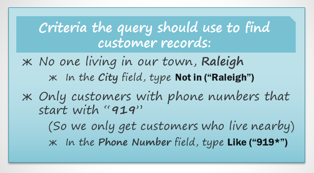
Îmbinarea tabelelor în interogăriUltimul lucru pe care trebuie să îl luați în considerare atunci când proiectați o interogare este modul în care conectați sau vă alăturați tabelelor cu care lucrați. Când adăugați două tabele la o interogare Access, aceasta este ceea ce veți vedea în panoul Relație obiect:
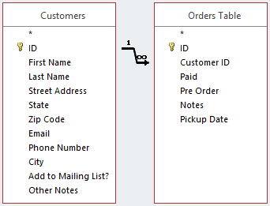
Linia care leagă cele două tabele se numește linia de unire. Vedeți cum linia de unire este de fapt o săgeată? Acest lucru se datorează faptului că indică ordinea în care interogarea analizează datele din cele două tabele. În imaginea de mai sus, săgeata indică de la stânga la dreapta, ceea ce înseamnă că interogarea va analiza mai întâi datele din tabelul din stânga, apoi se va uita doar la datele din tabelul din dreapta care se referă la înregistrările deja văzute în tabelul din stânga.
Mesele tale nu vor fi întotdeauna unite în acest fel. Uneori, Access li se va alătura de la dreapta la stânga. În ambele cazuri, este posibil să fie necesar să schimbați direcția de conectare pentru a vă asigura că interogarea dvs. include informațiile corecte. Direcția de alăturare poate afecta informațiile pe care le preia interogarea dvs.
Pentru a înțelege ce înseamnă acest lucru, luați în considerare interogarea pe care o proiectăm. Pentru interogarea noastră, trebuie să vedem clienții care au plasat comenzi, așa că am inclus tabelul Clienți și tabelul Comenzi. Să aruncăm o privire la unele dintre datele conținute în aceste tabele.
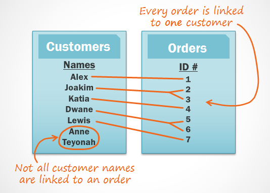
Ce observi când te uiți la aceste liste? În primul rând, fiecare comandă din tabelul Comenzi este legată de cineva din tabelul Clienți - clientul care a plasat comanda respectivă. Cu toate acestea, când te uiți la tabelul Clienți, vei vedea că clienții care au plasat mai multe comenzi sunt conectați la mai multe comenzi, iar cei care nu au plasat niciodată o comandă nu sunt conectați la nicio comandă. După cum puteți vedea, chiar și atunci când două tabele sunt legate, este posibil să aveți înregistrări într-un tabel care nu au nicio relație cu nicio înregistrare din celălalt tabel.
Deci, ce se întâmplă când Access încearcă să ruleze interogarea noastră cu uniunea curentă, de la stânga la dreapta? Extrage fiecare înregistrare din tabelul din stânga: tabelul Clienți.
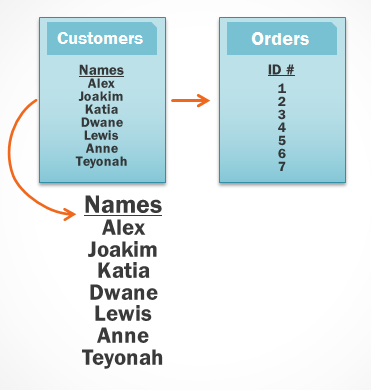
Apoi preia fiecare înregistrare din tabelul din dreapta care are o relație cu o înregistrare pe care Accesul a luat-o deja din tabelul din stânga.
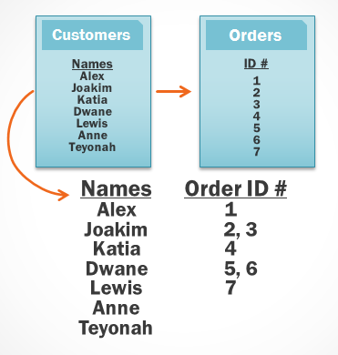
Deoarece alăturarea noastră a început cu tabelul Clienți , interogarea noastră va include înregistrări pentru toți clienții noștri, inclusiv pentru cei care nu au plasat niciodată comenzi. Acestea sunt mai multe informații decât avem nevoie. Vrem doar să vedem înregistrări pentru clienții care au plasat comenzi.
Din fericire, putem rezolva această problemă schimbând direcția liniei de îmbinare. Dacă în schimb unim mesele de la dreapta la stânga, Access va prelua mai întâi comenzile din tabelul din dreapta, tabelul Comenzi:
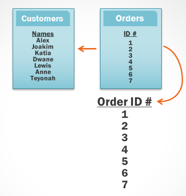
Apoi Access se va uita la tabelul din stânga și va prelua numai înregistrările clienților care sunt conectați la o comandă din dreapta.
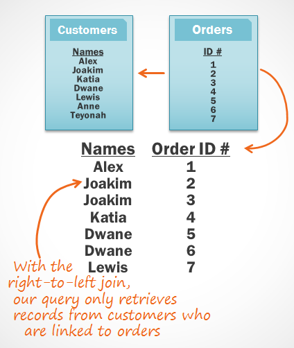
Acum avem exact informațiile pe care ni le dorim: toți clienții care au plasat o comandă și doar acești clienți. După cum puteți vedea, a trebuit să ne unim mesele în direcția corectă pentru a obține informațiile pe care le doream.
Acum că înțelegem ce direcție de îmbinare trebuie să folosim, suntem gata să construim interogarea noastră!
Crearea unei interogări cu mai multe tabeleAcum că ne-am planificat interogarea, suntem gata să o proiectăm și să o rulăm. Dacă ați creat planuri scrise pentru interogarea dvs., asigurați-vă că le faceți referire frecvent pe parcursul procesului de proiectare a interogării.
Pentru a crea o interogare cu mai multe tabele: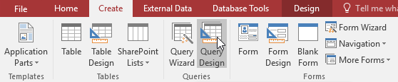
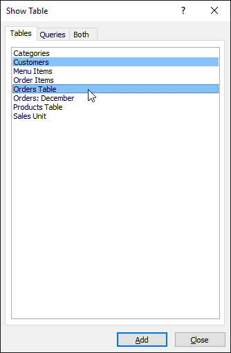
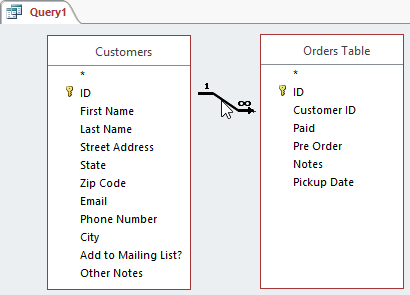
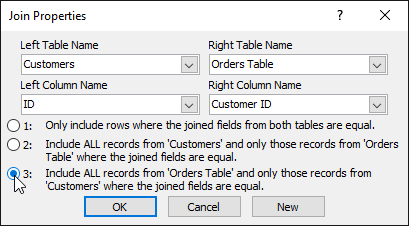
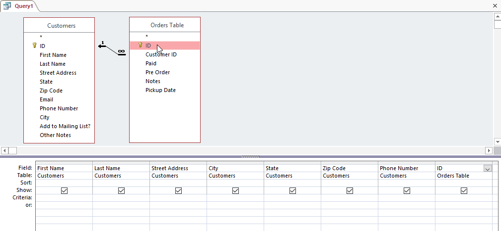
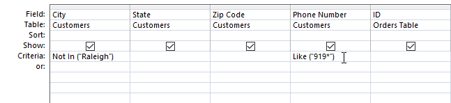
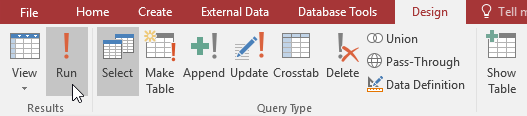
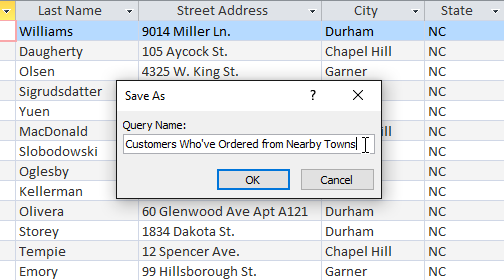
Acum știți cum să creați o interogare cu mai multe tabele. În lecția următoare, vom acoperi mai multe opțiuni de proiectare a interogărilor care vă pot face interogarea și mai puternică.